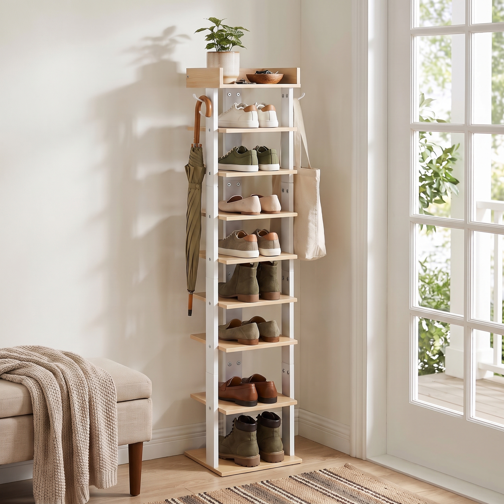
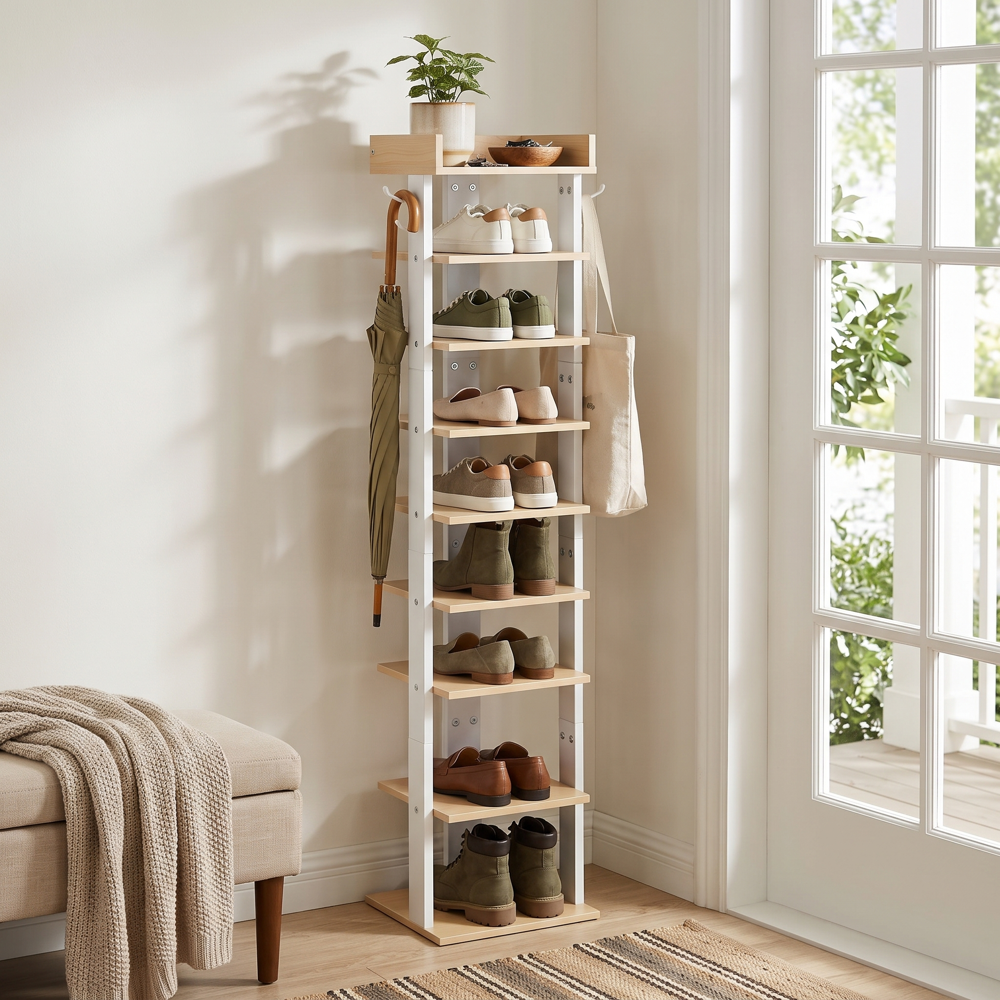
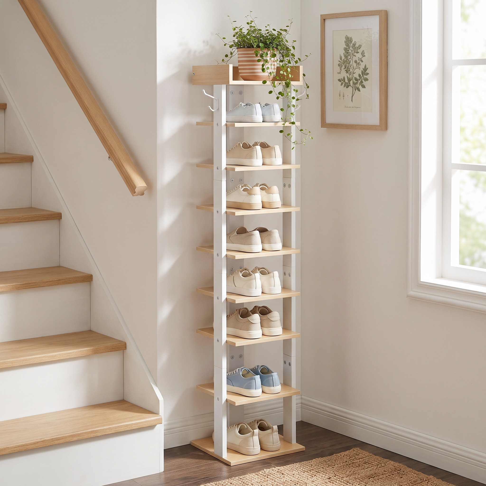
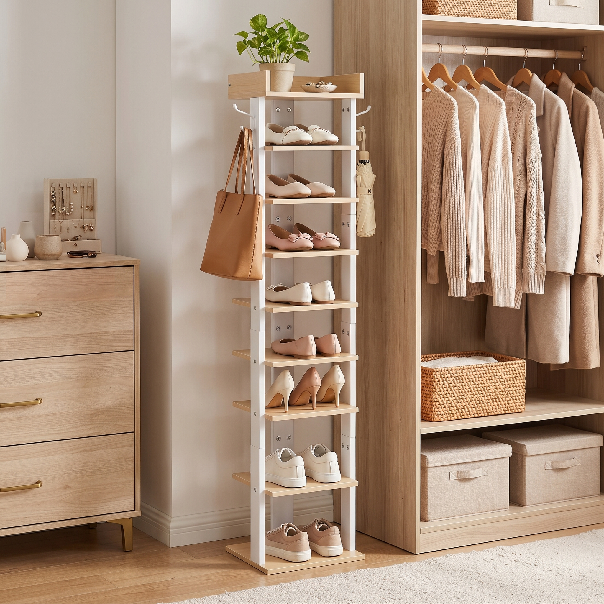
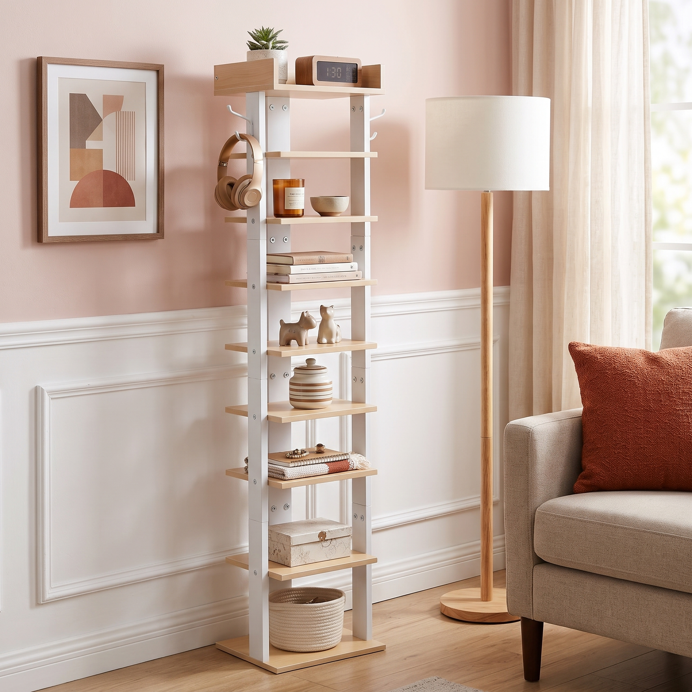

严格遵循 identityLock 锁定的产品物理特征（7层浅木纹平放层板+1层三面围栏防跌落顶层托盘+双侧金属挂钩+白色金属立柱框架+加宽方形底座）。严格遵守不虚构未知功能原则（层板是否可调节未知，故不设计拆卸对比图，改为表现垂直分层空间与顶部防跌落托盘/挂钩的结构特写；防水与防倾倒无证据故不虚构），9个图位按顺序规划，场景图4-7空间与环境道具完全独立不重复，主图保持纯白无配饰，所有文字、标注、尺寸线由后期叠加并在摄影底图中留白。
研究依据与身份锁
{
"identity": {
"traits": "立式细长多层收纳鞋架，配有浅原木色木纹层板、带三面围栏的顶层置物盘、白色金属立柱框架、加宽底座以及顶部两侧的双侧金属挂钩。",
"structure": "立式窄型分层框架结构。底部为加宽单块方形底板，中部由前侧两根白色立柱与后侧中柱支撑，设置7层浅木纹平放层板；顶部设有一层带有三侧防跌落挡板的托盘式顶板，顶部两侧立柱外侧各配有1个外展挂钩。整体通过螺丝固定拼接。具体尺寸及层板是否可调节未知。",
"materials": "浅木纹贴面板材、白色喷涂金属管材、金属挂钩及连接螺丝。",
"colors": "浅木纹色、白色",
"functions": [
"垂直多层鞋靴/物品分层置物收纳",
"顶部托盘防滑落小物件随手置物",
"侧边双挂钩悬挂雨伞、钥匙或小型包袋"
],
"sellingPoints": [
{
"name": "垂直窄型多层收纳设计",
"evidence": "采用高立式、小底面积的直立多层层板设计，能够充分利用垂直纵向空间存放多双鞋物或杂物。",
"priority": 1
},
{
"name": "顶部设防掉落置物托盘",
"evidence": "最顶层板三面设计有凸起木质挡板围栏，形成凹槽式置物托盘，方便随手安放钥匙、零钱等小件物品且不易滑落。",
"priority": 2
},
{
"name": "侧边双挂钩拓展悬挂功能",
"evidence": "顶部立柱左右两侧各安装有一个外延金属挂钩，可挂放雨伞、钥匙串、包袋等随身物件。",
"priority": 3
},
{
"name": "浅木纹与纯白简约拼接外观",
"evidence": "整体采用清新的浅色原木木纹层板搭配纯白金属立柱框架，视觉轻盈百搭。",
"priority": 4
}
],
"referenceAssetIds": [
"cmvqffv520002bcv8ocnfwnuj"
],
"identityVersionId": null
},
"research": {
"status": "skipped",
"note": "竞品检索已跳过：联网搜索尚未配置，管理员需填写 TAVILY_API_KEY 并重启服务；可以关闭联网继续制作",
"commonScenes": [],
"commonExpressions": [],
"homogeneity": [],
"opportunities": [],
"sources": [],
"cachedAt": "2026-10-27T08:56:20.449Z",
"references": []
},
"library": "使用同品类经验"
}main_white白底主图
浅木纹与纯白简约拼接外观场景：纯白无影棚拍
道具：
陈列：鞋架空置直立摆放，展示7层平放浅木纹层板、顶部带三面围栏托盘、白色双立柱及两侧金属挂钩，无任何鞋物或装饰配件
机位：正前方略偏微侧角，平视机位，展示完整垂直比例与结构
光线：专业摄影棚柔和均匀漫射光，立体柔和阴影
构图：垂直居中，完整入画，画幅留白合理
后期：无需叠加
依据：identityLockloaded_white白底装载效果图
垂直窄型多层收纳设计场景：纯白无影棚拍
道具：运动鞋、帆布鞋、皮鞋、托特包、长柄雨伞、钥匙串
陈列：鞋架7层平放层板各陈列一双鞋物（低处放皮鞋/球鞋，高处放轻便帆布鞋），顶层托盘放置钥匙串，左侧挂钩挂折叠雨伞，右侧挂钩挂轻便帆布包，展示完整收纳状态
机位：侧前方30°，稍高机位，清晰看清各层收纳及顶部托盘内部
光线：明亮通透的棚拍三点布光
构图：主体居中纵向构图，呈现整洁有序的垂直储物效果
后期：无需叠加
依据：identityLockdimension尺寸规格底图
立式窄型占地小场景：极简素雅室内纯白墙面及浅灰水泥地面
道具：
陈列：鞋架空置摆放在墙边，侧前方完整展示整体高度、层板进深、底座宽度及层板间距
机位：正前方略偏15°，平视平轴机位，避免透视畸变
光线：柔和均匀自然光，无强烈投影
构图：产品偏右居中放置，左侧和顶部留出充足版面空间以便后期排版标注
后期：后期叠加各层高度标注线、总高度、底座宽与长尺寸数字、挂钩外展尺寸说明及卖点文字标签
依据：identityLockentryway门厅玄关场景图
窄空间玄关高效收纳场景：现代简约门厅玄关
道具：左侧被裁切的米色长凳和针织毯、右侧法式白框玻璃门，门外绿植、条纹地毯一角、多色混搭日常鞋靴、绿植加木碗加钥匙、左挂长柄伞右挂托特包
陈列：鞋架贴靠门厅角落墙面放置。7层层板放日常出门常穿鞋履；顶层托盘内放置木碗盛放钥匙与小绿植；左侧挂钩挂长柄伞，右侧挂包袋
机位：正面略偏左机位，全景视角
光线：柔和侧窗自然光，伴有淡淡树叶光影
构图：竖向鞋架完整入画靠墙立于角落，前景边缘裁切长凳交代玄关动线，画面左上方留白
后期：后期在画面左上方留白区域添加窄空间高效收纳图标及卖点文案排版
依据：identityLock、shoe-experience-scene-entryway、shoe-experience-props-entryway
候选 cmvqglbnq0009nwv8lmet5xov
候选 cmvqgh20q0005nwv8x144mqhxstaircase楼梯转角空间图
垂直纵向空间充分利用场景：采光良好的复式楼梯下转角处
道具：左侧原木踏步白色踢面的楼梯和原木扶手、右侧白框窗户、墙上一幅原木框植物版画、深色木地板、黄麻地毯、浅色为主加一双浅蓝点缀鞋履、条纹陶盆镜面草
陈列：鞋架置于楼梯角狭窄拐角处，层板陈列浅色休闲鞋与浅蓝色帆布鞋，顶层托盘摆放条纹陶盆镜面草，双侧挂钩空置展示简约形态
机位：侧前方45°稍高机位，展现鞋架与楼梯夹角贴合
光线：来自右侧窗户的明亮柔和自然侧光
构图：垂直鞋架贯穿画面纵向，左侧楼梯斜线构图引向产品，层次分明
后期：无需叠加
依据：identityLock、shoe-experience-scene-staircase、shoe-experience-props-staircase
候选 cmvqggurf0004nwv8j9u1wzcccloset步入式衣帽间场景图
鞋包配饰一站式收纳场景：精致女性步入式衣帽间
道具：右侧开放式原木衣柜，挂针织衣物，下层收纳盒和藤编筐、左侧金色拉手原木斗柜，上面放首饰盒、米色地毯一角、全女款奶白粉色系鞋履、挂一个托特包、白盆绿萝
陈列：鞋架立于衣柜与斗柜之间的空档，7层层板整齐陈列奶白粉色系单鞋、高跟鞋与便鞋；顶部托盘放置小盆绿萝与首饰盒；一侧挂钩悬挂皮质托特包
机位：正面略偏左，中景平视取景
光线：柔和漫射室内光，营造温馨纯净氛围
构图：鞋架居中，左右环境家具边缘裁切，凸显其作为衣帽间垂直鞋靴补充收纳的核心位置
后期：无需叠加
依据：identityLock、shoe-experience-scene-closet、shoe-experience-props-closet
候选 cmvqgpv2a000bnwv8s453fjib候选 cmvqgh33t0006nwv85br7luopliving_multiuse客厅多功能置物图
一物多用开放式多层置物架场景：现代温馨客厅休闲角
道具：粉色墙面配白色护墙板、墙上几何抽象画、原木落地灯、右侧被裁切的米色沙发和锈橙色抱枕、纱帘、小盆多肉、陶瓷动物摆件、一叠书、木纹电子闹钟、陶瓷浅碗、香薰蜡烛、条纹陶罐、棉绳收纳筐、挂耳机
陈列：鞋架作为多功能展示架使用，不陈列鞋物。层板从上至下分别放置香薰蜡烛、叠放书籍、陶瓷小摆件、条纹陶罐及底座棉绳收纳筐；顶层托盘放木纹闹钟与小多肉；挂钩悬挂头戴式耳机
机位：正面略偏左，侧看客厅沙发角落
光线：经纱帘过滤的柔和自然侧光
构图：立式架子靠墙完整入画，右侧边缘裁切沙发一角与落地灯，突出居家温馨角落
后期：无需叠加
依据：identityLock、shoe-experience-scene-living_multiuse、shoe-experience-props-living_multiuse
候选 cmvqgh4l70007nwv8uzv7yy4ydetail_top_hooks顶部围栏托盘与双挂钩特写
顶部设防掉落置物托盘与侧边双挂钩场景：暖白墙面与浅木质背景的局部室内景
道具：钥匙串、太阳眼镜、金属手表、皮质托特包一侧肩带
陈列：镜头聚焦鞋架最顶层托盘及两侧金属挂钩局部。托盘内摆放太阳眼镜与钥匙串，三面凸起挡板结构清晰可见；一侧金属挂钩上自然悬挂托特包带
机位：45度斜俯视特写机位，景深虚化背景
光线：明亮侧逆光凸显木纹质感、三面围栏接缝工艺与挂钩金属喷涂光泽
构图：顶部托盘处于画面核心黄金分割区，挂钩从一侧自然延伸入画
后期：后期在右侧或下方留白处添加细节说明标签指引线：强调‘三面防护挡板防滑落’与‘双侧外展金属挂钩便捷挂取’
依据：identityLockdetail_materials层板材质与稳固底座细节
浅木纹细腻质感与加宽稳固底座场景：明亮棚内局部特写场景
道具：
陈列：聚焦鞋架底部2层层板、加宽方形底板以及与白色前金属立柱的螺丝拼接紧固节点，真实展现平滑木纹贴面边缘与喷涂管材细节
机位：低角度微距特写机位，平视轻微仰角
光线：柔和定向侧光，突出浅原木纹理起伏与白色哑光金属管质感
构图：对角线构图，层板边缘与立柱交汇点居于视觉重心，底座平稳着地
后期：后期叠加材质与结构细节说明文字，标注加宽稳固底板与耐磨木纹表面特性
依据：identityLock